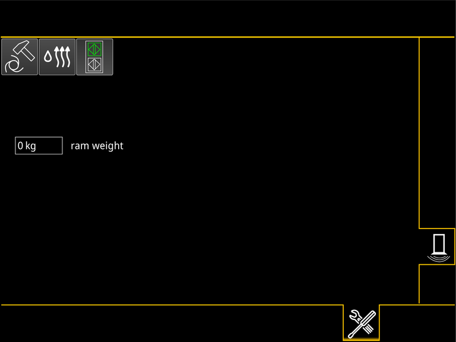
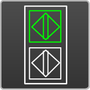

Liebherr-Hammer einstellen
Die wichtigsten Parameter des Liebherr-Hammers wie Betriebsdrücke und Betriebsstunden sind auf dem Hammer gespeichert und werden von der Maschine automatisch erkannt und übernommen.

Taste Bildschirmseite Einstellungen am Bildschirm drücken. |
Taste Bildschirmseite Hammer am Bildschirm drücken. |
Bildschirmseite Hammer wird am Bildschirm eingeblendet: |

Fig. 4056: Bildschirmseite Hammer (mit Liebherr-Hammer)
Fig. 4056: Bildschirmseite Hammer (mit Liebherr-Hammer)
Aufgerüstetes Rammgewicht in Eingabefeld Rammgewicht einstellen. |
Wenn Einzelschlag-Modus verwendet werden soll: | |
Taste Hammer-Modus am Bildschirm drücken. | |
Taste Hammer-Modus ändert Status: |
Einzelschlag-Modus ist gewählt. |
Wenn Automatik-Modus verwendet werden soll: | |
Taste Hammer-Modus am Bildschirm drücken. | |
Taste Hammer-Modus ändert Status: |
Automatik-Modus ist gewählt. |
Informationen zu der Lokalisierung der Sensoren am Hammer sind in der Betriebsanleitung der auswechselbaren Ausrüstung AZ 0106.xx.xx beschrieben.
Beim High-Restart sind die Sensoren an oberer Position des Sensorhalters montiert.
High-Restart des Hammers wählen: Taste Position der Sensoren am Bildschirm drücken. |
Taste Position der Sensoren ändert Status: |

Fig. 4063: Taste Position der Sensoren (High-Restart leuchtet grün)
Fig. 4063: Taste Position der Sensoren (High-Restart leuchtet grün)
High-Restart ist gewählt. |
Hub oder Schlag des Hammers kann früher oder schneller ausgeführt werden. |
Bei der normalen Position sind die Sensoren an unterer Position des Sensorhalters montiert.
Normale Position der Sensoren am Hammer wählen: Taste Position der Sensoren am Bildschirm drücken. |
Taste Position der Sensoren ändert Status: |
Normale Position der Sensoren ist gewählt. |